전기공사기사 (2007-09-02 기출문제)
1과목: 전기응용 및 공사재료
1. 전기 가열의 특징에 해당되지 않는 것은?
- 매우 높은 온도를 얻을 수 있다.
- 내부 가열이 불가능하다.
- 온도 제어 및 조작이 간단하다.
- 열효율이 매우 좋다.
(정답률: 87%)

2. SCR를 역병렬로 접속한 것과 같은 특성의 소자는?
- TRIAC
- GTO
- 광사이리스터
- 역전용 사이리스터
(정답률: 84%)
3. 전철에서 전식방지 방법 중 전철측 시설이 아닌 것은?
- 레일에 본드를 시설한다.
- 레일을 따라 보조귀선을 설치한다.
- 변전소간 간격을 짧게한다.
- 매설관의 표면을 절연한다.
(정답률: 77%)
4. 계자전류를 일정하게 하고, 전기자에 인가하는 전압을 변화시켜 속도를 제어하는 방법으로 타여자 전동기의 속도제어에 주로 쓰이는 제어는?
- 전압제어
- 저항제어
- 계자제어
- 전류제어
(정답률: 82%)
5. 조명기구를 일정한 높이 및 간격으로 배치하여 방전체의 조도를 균일하게 조명하는 방식이며 특징은 작업대의 위치가 변하여도 등기구의 배치를 변경시킬 필요가 없다.
- 전반 조명
- 국부 조명
- 전반 국부 겸용 조명
- 중점 배열 조명
(정답률: 69%)
6. 철도 통신에 있어서 유도 장해에 대한 대책으로 사용되는 시설은?
- 선발 차단기
- 피뢰기
- 흡상 변압기
- 궤도 계전기
(정답률: 86%)
7. 금속의 표면 열처리에 이용하며 도체에 고주파 전류를 통하면 전류가 표면에 집중하는 현상은?
- 표피 효과
- 톰슨 효과
- 핀치 효과
- 지벡 효과
(정답률: 89%)
8. 루소 선도가 그림과 같은 광원의 배광 곡선의 식은?
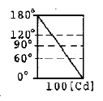
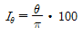
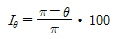
- Iθ=100cosθ
- Iθ=50(1+cosθ)
(정답률: 70%)
9. 평균 구면 광도 100[cd]의 전구 5개를 지름 10[m]인 원형의 방에 설치할 때, 조명률을 0.5, 감광보상률 1.5라고 하면 그 방의 평균 조도는 약 몇 [lx]인가?
- 27
- 40
- 100
- 120
(정답률: 80%)
10. 액체 속에 미립자를 넣고 전압을 가하면 대다수 입자가 양극을 향해서 이동하게 된다. 이러한 현상을 무엇이라 하는가?
- 전기 영동
- 비산 현상
- 정전 현상
- 정전 선별
(정답률: 76%)
11. 다음 중 옥외등에 대한 설명 중 잘못된 것은?
- 전로의 사용전압은 대지전압을 최대 400V 이하로 하여야 한다.
- 옥내등과 병용하는 분기회로는 15A 분기회로로 한다.
- 옥외등의 인하선을 금속관 배선으로 한다.
- 옥외등의 배선을 케이블 배선으로 한다.
(정답률: 58%)
12. 알카리 축전지의 양극에 쓰이는 재료는?
- 납
- 카드뮴
- 철
- 산화니켈
(정답률: 76%)
13. 기체의 무기질 절연 재료는 어느 것인가?
- 알드레이
- 운모
- 실리콘유
- 불화황(SF6)
(정답률: 78%)
14. 변압기유로 쓰이는 절연유에 요구되는 특성이 아닌 것은?
- 절연내력이 클 것
- 점도가 클 것
- 인화점이 높을 것
- 비열이 커서 냉각 효과가 클 것
(정답률: 89%)
15. 지중인입선의 경우에 22.9kV-Y 계통에서는 어떤 케이블을 사용하는가?
- CNCV-W 케이블
- EVCT 케이블
- CD-C 케이블
- RN 케이블
(정답률: 88%)
16. 22.9 [kV-Y] 특별고압 가공전선로에서 3조를 수평으로 배열하기 위한 완금의 길이(mm)는?
- 2400
- 1800
- 1400
- 900
(정답률: 78%)
17. 다음 중 수뢰부로 하는 것을 목적으로 공중에 돌출하게 한 봉상(棒狀) 금속체를 무엇이라 하는가?
- 돌침
- 케이지
- 접지극
- 용마루
(정답률: 85%)
18. 금속전선과 사용시 케이블 손상방지용으로 사용되는 것은?
- Kock Nut
- Bushing
- Coupling
- Elbow
(정답률: 81%)
19. 가공 송전선로 및 변전소에 있어서 애자장치에 사용되는 금구류는? (문제 오류로 실제 시험에서는 나, 다, 라번이 정답처리 되었습니다. 여기서는 나번을 누르면 정답 처리 됩니다.)
- PG 클램프
- 삼각요크
- 아마톳드
- 볼아이
(정답률: 73%)
20. GV의 약호는 어떤 품명의 약호인가?
- 인입용 비닐절연전선
- 접지용 비닐전선
- 강복알루미늄선
- 폴리에치렌 비닐네온전선
(정답률: 83%)
2과목: 전력공학
21. “전선의 단위길이내에서 연간에 손실되는 전력량에 대한 전기요금과 단위길이의 전선값에 대한 금리, 감가상각비 등의 년간 병비의 합계가 같게 되는 전선 단면적이 가장 경제적인 전선의 단면적이다.”이 법칙은?
- 뉴크의 법칙
- 켈빈의 법칙
- 플레밍의 법칙
- 스틸의 법칙
(정답률: 13%)
22. 다음 중 송전선로의 특성임피던스와 전파정수를 구하기 위한 시험으로 가장 적절한 것은?
- 무부하시험과 단락시험
- 부하시험과 단락시험
- 부하시험과 충전시험
- 충전시험과 단락시험
(정답률: 13%)
23. 전선의 굵기가 균일하고 부하가 균등하게 분산되어 있는 배전선로의 전력손실은 전체 부하가 선로 말단에 집중되어 있는 경우에 비하여 어느 정도가 되는가?
- 1/2
- 1/3
- 2/3
- 3/4
(정답률: 14%)
24. 그림과 같은 배전선에서 부하중심점의 위치는 급전점 F로부터 몇 [m] 지점인가? (단, 부하역률은 모두 1 이다.)
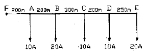
- 300
- 500
- 700
- 900
(정답률: 9%)
25. 직렬콘덴서를 선로에 삽입할 때의 이점이 아닌 것은?
- 선로의 인덕턴스를 보상한다.
- 수전단의 전압변동률을 줄인다.
- 정태안정도를 증가한다.
- 수전단의 역률을 개선한다.
(정답률: 12%)
26. 다음 중 화력발전소에서 가장 큰 손실은?
- 소내용 동력
- 연도 배출가스 손실
- 복수기에서의 손실
- 송풍기의 손실
(정답률: 16%)
27. 단로기의 사용 목적은?
- 과전류의 차단
- 단락사고의 차단
- 부하의 차단
- 선로의 개폐
(정답률: 11%)
28. 다음 중 가공 송전선로에 사용되는 전선의 구비조건으로 적절하지 않은 것은?
- 도전율이 높을 것
- 기계적인 강도가 클 것
- 비중이 클 것
- 내구성이 있을 것
(정답률: 19%)
29. 직접접지방식에 대한 설명 중 옳지 않은 것은?
- 이상전압 발생의 우려가 적다.
- 계통의 절연수준이 낮아지므로 경제적이다.
- 변압기의 단절연이 가능하다.
- 보호계전기가 신속히 동작하므로 과도안정도가 좋다.
(정답률: 10%)
30. 충전 전류에 의해 수전단의 전압이 송전단의 전압보다 높아지는 현상은?
- 페란티 현상
- 코로나 현상
- 카르노 현상
- 보어 현상
(정답률: 15%)
31. 역률 80%의 3상 평형부하에 공급하고 있는 선로길이 3상3선식 배전선로가 있다. 부하가 단자전압을 6000으로 유지하였을 경우, 선로의 전압강하율이 10%를 넘지 않게 하기 위해서는 부하전력을 약 몇 [kW]까지 허용할 수 있는가? (단, 전선 1선당의 저항은 0.82/km,리액턴스는 0.38/km라 하고, 그 밖의 정소는 무시한다.)(오류 신고가 접수된 문제입니다. 반드시 정답과 해설을 확인하시기 바랍니다.)
- 1303
- 1629
- 2257
- 2825
(정답률: 9%)
32. 수조에 대한 설명 중 옳지 않은 것은?
- 수로내의 수위의 이상상승을 방지한다.
- 수로식 발전소의 수로의 처음 부분과 수압관의 아래 부분에 설치한다.
- 수로에서 유입하는 물속에 토사를 침전시켜서 배사문으로 배사하고 부유물을 제거한다.
- 용량을 크게 하는 것이 바람직하나, 지형적 조건에 따라서 최소한 최대사용 유량을 1~2분 동안 저장할 수 있는 용적을 가져야 한다.
(정답률: 10%)
33. 계전기의 반한시 특성이란?
- 동작전류가 클수록 동작시간이 길어진다.
- 동작전류가 흐르는 순간에 동작한다.
- 동작전류에 관계없이 동작시간은 일정하다.
- 동작전류가 크면 동작시간은 짧아진다.
(정답률: 13%)
34. 전력수용의 수용률은?
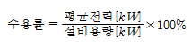
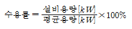
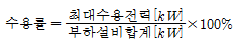
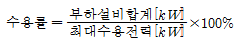
(정답률: 14%)
35. 다음 중 자기여자를 방지하기 위한 충전용 발전기의 조건으로 가장 적절한 것은?
- 발전기 용량은 선로의 충전용량보다 작아야 한다.
- 발전기 용량은 3배의 선로 충전용량보다 작아야 한다.
- 발전기 용량은 선로의 충전용량보다 커야 한다.
- 발전기 용량은 3배의 선로 충전용량과 같아야 한다.
(정답률: 8%)
36. 네트워크 배전방식의 장점이 아닌 것은?
- 정전이 적다.
- 전압변동이 적다.
- 인축의 접촉사고가 적어진다.
- 부하증가에 대한 적응성이 크다.
(정답률: 15%)
37. 기력발전소의 열사이클의 과정 중 단열팽창 과정의물 또는 증기의 상태변화는?
- 습증기 → 포화액
- 과역증기 → 습증기
- 포화액 → 압축액
- 압축액 → 포화액 → 포화증기
(정답률: 8%)
38. 배전선로의 고장전류를 차단할 수 있는 것으로 가장 알맞은 것은?
- 단로기
- 구분개폐기
- 컷아웃스위치(COS)
- 차단기
(정답률: 19%)
39. 다음 중 가공 송전선에 사용하는 애자련 중 전압부담이 가장 큰 것은?
- 전선에 가장 가까운 것
- 중앙에 있는 것
- 철탑에 가장 가까운 것
- 철탑에서 이점의 것
(정답률: 13%)
40. 개폐 서지의 이상전압을 감쇄 할 목적으로 설치하는 것은?
- 단로기
- 차단기
- 리액터
- 개폐 저항기
(정답률: 15%)
3과목: 전기기기
41. 변압기 여자 전류의 파형은?
- 파형이 나타나지 않는다.
- 사인파
- 구형파
- 왜형파
(정답률: 9%)
42. 변압기 누설 리액턴스를 줄이는 가장 효과적인 방법은 어느 것인가?
- 철심의 단면적을 크게 한다.
- 코일의 단면적을 크게 한다.
- 권선을 교호(交互) 배치한다.
- 권선을 동심 배치한다.
(정답률: 7%)
43. 동기발전기의 무부하시험 및 단락시험에서 구할 수 없는 것은?
- 전기자 반작용
- 철손
- 단락비
- 동기 임피던스
(정답률: 6%)
44. 6000[V], 5[MVA]의 3상 동기 발전기의 계자전류 200[A]에서의 무부하 단자전압이 6000[V]이고, 단락전류는 600[A]라고 한다. 동기임피던스[Ω]와 %동기임피던스는 얼마인가?
- 5.8[Ω], 80[%]
- 6.4[Ω], 85[%]
- 6.4[Ω], 3[%]
- 6.0[Ω],75[%]
(정답률: 9%)
45. 동기발전기는 회전 계자형을 사용하는 경우가 많다. 그 이유로 적합하지 않는 것은?
- 계자극은 기계적으로 튼튼하다.
- 전기자 권선은 고전압으로 결선이 복잡하다.
- 기전력의 파형을 개선한다.
- 계자회로는 직류 저전압으로 소요전력이 작다.
(정답률: 10%)
46. 단상 유도전압조정기의 2차 전압이 100±30[V]이고, 직렬권선의 전류가 6[A]인 경우 정격용량은 몇 [VA]인가?
- 780
- 420
- 312
- 180
(정답률: 12%)
47. 그림과 같은 단상 전파 정류회로에서 첨두 역전압[V]은 얼마인가? (단, 여기서 변압기 2차측 a,b간 전압은 200[V]이고 정류기의 전압강하는 20[V]이다.)
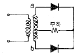
- 120
- 200
- 262
- 320
(정답률: 7%)
48. 서보 전동기로 사용되는 전동기와 제어방식의 종류가 아닌 것은?
- 직류기의 전압 제어
- 릴럭턴스기의 전압 제어
- 유도기의 전압 제어
- 동기 기기의 주파수 제어
(정답률: 10%)
49. 직류전동기의 총도체수는 80, 단중 중권이며, 극수2, 1극의 자속수 3.14[Wb]이다. 부하를 거어 전기자에 10[A]가 흐르고 있을 때, 발생 토크 [kg·m]는 약 얼마인가?
- 38.6
- 40.8
- 42.6
- 44.8
(정답률: 9%)
50. 유도전동기의 안정운전의 조건은?
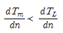
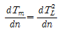
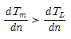
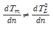
(정답률: 12%)
51. 3상 유도전압 조정기의 동작원리 중 가장 적당한 것은?
- 회전자계에 의한 유도작용을 이용하여 2차 전압의 위상전압 조정에 따라 변화한다.
- 교번자계의 전자유도작용을 이용한다.
- 충전된 두 물체 사이에 작용하는 힘
- 두 전류 사이에 작용하는 힘
(정답률: 12%)
52. 단상 직권 정류자 전동기에서 주자속의 최대치를
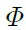
m, 자극수를 P, 전기자 병렬 회로수를 a, 전기자 전 도체수를 Z, 전기자의 속도를 N[rpm]이라 하면 속도 기전력의 실효값 E?[V]은? (단, 주자속은 정현파이다.)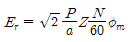
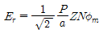
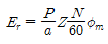
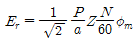
(정답률: 7%)
53. 10[kM], 200[V], 전기자저항 0.15[Ω]의 타여자발전기를 전동기로 사용하여 발전기의 경우와 같은 전류를 흘렸을 때 단자전압은 몇[V]로 하면 되는가? (단, 여기서 전기자 반작용은 무시하고 회전수는 같도록 한다.)
- 200
- 207.5
- 215
- 225.5
(정답률: 10%)
54. 교류전력을 교류로 변환하는 것은?
- 정류기
- 쵸퍼
- 인버터
- 사이크로 컨버터
(정답률: 11%)
55. 어느 변압기의 백분율 저항강하가 2[%], 백분율 리액턴스 강하가 3[%]일 때 역률(지역률)80[%]인 경우의 전압변동률은 얼마인가?
- -0.2[%]
- 3.4[%]
- 0.2[%]
- -3.4[%]
(정답률: 11%)
56. 다음 중 변압기의 온도 시험을 하는데 가장 좋은 방법은?
- 무부하법
- 배전압법
- 절연전압시험법
- 반환부하법
(정답률: 12%)
57. 유도 전동기의 회전자에 슬립 주파수의 전압을 가하는 속도제어는?
- 2차 저항법
- 자극수 변환법
- 인버터주파수 변환법
- 2차 여자법
(정답률: 10%)
58. 직류 발전기에서 섬락이 생기는 가장 큰 원인은?
- 장시간 계속 운전
- 부하의 급변
- 경부하 운전
- 회전속도가 지나치게 떨어졌을 때
(정답률: 15%)
59. 동기발전기에서 무부하 포화 곡선과 공극선을 사용해서 산출할 수 있는 것은?
- 동기 임피던스
- 단락비
- 전기자 반작용
- 포화율
(정답률: 6%)
60. 정류자형 주파수 변환기를 동일한 전원에 연결된 유도전동기의 축과 직결해서 사용하고 있다. 다음 설명 중 틀린 것은?
- 농형 유도전동기의 2차 여자를 할 수 있다.
- 권선형 유도전동기의 속도제어 및 역률개선을 할수 있다.
- 유도전동기의 속도제어법위가 동기속도 상하 10~15% 정도이다.
- 유도전동기가 동기속도 이하에서는 2차 전력이 변압기를 통해 전원으로 반환된다.
(정답률: 8%)
4과목: 회로이론 및 제어공학
61. R=100[Ω], C=30[㎌]의 직렬회로에 f=60[Hz], V=100[V]의 교류전압을 가할 때 전류[A]는 약 얼마인가?
- 133.5
- 88.4
- 75
- 0.75
(정답률: 7%)
62. 다음 내용 중 옳지 않은 것은?
- 회로의 임펄스 응답은 회로도를 알면 결정된다.
- 회로의 임펄스 응답은 입력을 알면 출력을 알 수 있다.
- 초기조건에 따라 임펄스 응답이 결정된다.
- 출력은 입력과 초기조건에 따라 결정된다.
(정답률: 6%)
63. R-L-C 직렬회로의 과도상태에서 저항의 값이 다음 중 어느 값일 때 진동이 되는가?
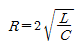
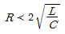
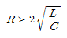
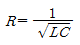
(정답률: 9%)
64. 3상 불평형 전압에서 영상전압이 140[V]이고, 정상 전압이 600[V], 역상전압이 280[V]이라면 전압의 불평 형율은?
- 2.144
- 0.566
- 0.466
- 0.233
(정답률: 12%)
65. RL 직렬회로에
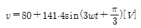
[V]를 가할때 전류[A]의 실효값은 약 얼마인가? (단, R=4[Ω], wL=1[Ω]이다.) (보기 오류로 현재 복원중입니다. 보기 내용을 아시는 분들께서는 오류 신고를 통하여 보기 작성 부탁 드립니다. 정답은 다번입니다.)- 복원중
- 복원중
- 복원중
- 복원중
(정답률: 10%)
66. △ 결선된 3상 회로에서 상전류가 다음과 같을 때 선전류 I1, I2, I3 중에서 그 크기가 가장 큰 것은 몇 [A]인가?
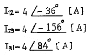
- 2.31
- 4.0
- 6.93
- 8.0
(정답률: 10%)
67. 결선된 대칭 3상 부하가 있다. 역률이 0.8(지상) 이고, 전소비전력이 1800[W]이다. 한 상의 선로저항이 0.5[Ω]이고 발생하는 전선로손실이 50[W]이면 부하단자 전압[V]은?
- 630
- 876
- 300
- 225
(정답률: 7%)
68. 파형이 반파 정류파 일 때 파고률은?
- 0.5
- 2.0
- 1.57
- 1.73
(정답률: 7%)
69. 무손실 선로에서 단위 길이에 대한 직렬 인덕턴스를 L, 병렬 커패시턴스를 C, 감쇠정수를 α, 위상정수를 β, 전원의 각 주파수를 w라 할 때 다음 관계가 성립하는 것은?
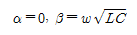
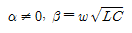
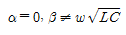
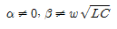
(정답률: 11%)
70. 다음 결합 회로의 4단자 정수 ABCD 파라미터 행렬은?
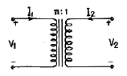
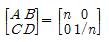
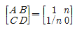
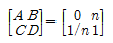
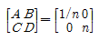
(정답률: 12%)
71. 그림과 같은 블록선도로 표시되는 제어계는?
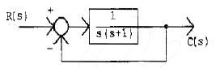
- 0형
- 1형
- 2형
- 3형
(정답률: 9%)
72. 다음 진리표의 게이트(gate)는?
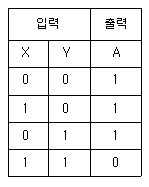
- AND
- OR
- NOR
- NAND
(정답률: 9%)
73. 프로세서 제어의 제어량이 아닌 것은?
- 물체의 자세
- 압력
- 유량
- 온도
(정답률: 12%)
74. G(s)H(s)가 다음과 같이 주어지는 부궤환계에서 근궤적 점근선의 실수축과의 교차점은?
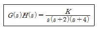
- -3
- -2
- -1
- 0
(정답률: 8%)
75. 그림의 신호 흐름 선도에서 C/R를 구하면?
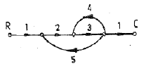
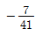
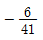
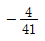
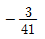
(정답률: 9%)
76. 다음의 전달함수를 갖는 회로가 진상 보상회로의 특성을 가지려면 그 조건은 어떠한가?
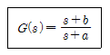
- a > b
- a < b
- a > 1
- b > 1
(정답률: 8%)
77.
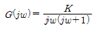
의 나이퀴스드 선도를 도시한 것은? (단, K≻K0)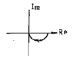
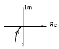
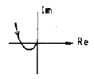
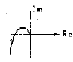
(정답률: 13%)
78.
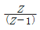
에 대응되는 라플라스 변환함수는?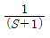
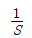
(정답률: 12%)
79. 그림과 같은 미분요소에 입력으로 단위계단 함수를 사용하면 출력 파형으로 알맞은 것은?
- 임펄스파형
- 사인파형
- 삼각파형
- 톱니파형
(정답률: 12%)
80. 다음 방정식으로 표시되는 제어계가 있다. 이 계를 상태 방정식 X = AX + BU 로 나타내면 계수 행렬 A는 어떻게 되는가?
(정답률: 14%)
5과목: 전기설비기술기준 및 판단기준
81. 고압 가공전선로에 사용하는 가공지선은 인장강도 5.26kN 이상의 것 또는 지름 몇 [mm] 이상의 나경동선 이어야 하는가?
- 2.0
- 3.0
- 4.0
- 5.0
(정답률: 11%)
82. 저압 가공전선 또는 고압 가공전선이 도로를 횡단 할 때 지표상의 높이는 몇 [m] 이상으로 하여야 하는가? (단, 농로 기타 교통이 번잡하지 않은 도로 및 횡단 보도교는 제외한다.)
- 4
- 5
- 6
- 7
(정답률: 15%)
83. 다음 중 특히 필요한 경우에 전로의 중성점에 접지 공사를 하는 목적으로 적절하지 않은 것은?
- 보호장치의 확실한 동작 확보
- 이상전압의 억제
- 대지전압의 저하
- 부하전류의 일부를 대지로 흐르게 하여 위험에 대처
(정답률: 5%)
84. 저압 가공 전선로와 기설 가공약전류 전선로가 병행하는 경우에 유도작용에 의한 통신상의 장해가 생기지 않도록 전선과 기설 약전류 전선과의 이격거리는 몇[m]이상으로 하여야 하는가? (단, 저압 가공전선은 케이블이 아니며, 가공 약전류 전선로의 관리자의 승낙을 얻은 경우가 아님)
- 2
- 3
- 4
- 5
(정답률: 11%)
85. 다음 공사에 의한 저압 옥내배선 중 사용되는 전선이 반드시 절연전선이 아니여도 무방한 공사는?
- 합성수지관 공사
- 금속관 공사
- 버스덕트 공사
- 플로어덕트 공사
(정답률: 9%)
86. 100kV 미만의 특별고압 가공전선로의 지지물로 B종 철주를 사용하여 경간을 300m로 하고자 하는 경우, 전선으로 사용되는 경동연선의 최소 단면적은 몇 [mm2]이 상이어야 하는가?
- 38
- 55
- 100
- 150
(정답률: 11%)
87. 전기기계기구가 무선설비의 기능에 계속적이고 또 한 중대한 장해를 주는 고주파 전류를 발생시킬 우려가 있는 경우에는 이를 방지하기 위한 조치를 하여야 하는데 다음 중 형광 방전등에 시설하여야 하는 커패시터의 정전용량은 몇 [㎌]이어야 하는가?
- 0.1㎌ 이상 1㎌ 이하
- 0.06 ㎌ 이상 0.1㎌ 이하
- 0.006㎌ 이상 0.5㎌ 이하
- 0.06㎌ 이상 10㎌ 이하
(정답률: 3%)
88. 직류식 전기철도용 전차선로의 절연 부분과 대지간의 절연 저항은 가공 직류 전차선인 경우, 사용전압에 대한 누설전류가 연장 1km마다 몇 [mA]를 넘지 아니하 도록 유지하여야 하는가? (단, 강체조가식은 제외한다.)
- 1
- 3
- 5
- 10
(정답률: 8%)
89. 정격전류 20A 및 40A인 전동기와 정격전류 10A인 전열기 5대에 전기를 공급하는 단상 200V 저압간선이 있다. 간선의 최소 허용전류는 몇 [A]인가?
- 100
- 116
- 125
- 136
(정답률: 9%)
90. 발전기·조상기·변압기·계기용변성기·모선 및 이를 지지하는 애자는 다음 중 어느 것에 의하여 생기는 기계적 충격에 견디는 것이어야 하는가?
- 정격전압
- 정격전류
- 단락전류
- 과부하전류
(정답률: 13%)
91. 변압기에 의하여 특별고압 전로에 결합되는 고압전로에 방전하는 장치를 그 변압기의 단자에 가까운 1극에 설치하였다고 할 때, 이 방전장치의 접지저항은 몇[Ω] 이하로 유지하여야 하는가?
- 10
- 30
- 50
- 100
(정답률: 13%)
92. 345kV 가공전선로를 제1종 특별고압 보안공사에 의하여 시설할 때 사용되는 경동연선의 굵기는 몇 [mm2] 이상이어야 하는가?
- 100
- 125
- 150
- 200
(정답률: 11%)
93. 옥내에 시설하는 사용전압이 400V 미만인 전구선으로 캡타이어 케이블을 사용할 경우, 단면적이 몇 [mm2] 이상이어야 하는가?
- 0.75
- 2
- 3.5
- 5.5
(정답률: 13%)
94. 옥내에 시설하는 전동기에는 전동기가 소손될 우려가 있는 과전류가 생겼을 때 자동적으로 이를 저지하거나 이를 경보하는 장치를 하여야 하는데, 단상 전동기인 경우 전원측 전로에 시설하는 과전류차단기의 정격전류가 몇 [A] 이하이면 이 과부하 보호 장치를 시설하지 않아도 되는가? (단, 단상 전동기는 KS C 4204(2003)의 표준정격의 것을 말한다.)
- 10
- 15
- 30
- 50
(정답률: 13%)
95. 제1종 접지공사 또는 제2종 접지공사에 사용하는 접지선을 사람이 접촉할 우려가 있는 곳에 시설하는 기준으로 옳지 않은 것은?
- 접지극은 지하 75cm 이상으로 하되 동결 깊이를 감안하여 매설한다.
- 접지선은 옥외용 비닐절연전선을 제외한 절연전선, 캡타이어 케이블 또는 통신용 케이블을 제외한 케이블을 사용한다.
- 접지선의 지하 60cm로부터 지표상 2m까지의 부분은 합성수지관 등으로 덮어야 한다.
- 접지선을 시설한 지지물에는 피뢰침용 지선을 시설 하지 않아야 한다.
(정답률: 13%)
96. 저압전로 중 절연 부분의 전선과 대지간 및 전선의 심선 상호간의 절연저항은 사용전압에 대한 누설전류가 최대 공급전류의 얼마를 넘지 않도록 하여야 하는가?
- 1/1000
- 1/2000
- 1/3000
- 1/4000
(정답률: 12%)
97. 고압 가공전선이 아테나와 접근상태로 시설되는 경우에 가공전선과 안테나사이의 수평 이격거리는 최소 몇 [cm]이상이어야 하는가? (단, 가공전선으로는 케이블을 사용하지 않는다고 한다.)
- 60
- 80
- 100
- 120
(정답률: 8%)
98. 금속관 공사에 의한 저압 옥내 배선시 콘크리트에 매설하는 경우 관의 최소 두께는 몇 [mm] 이상이어야 하는가?
- 0.8
- 1.0
- 1.2
- 1.4
(정답률: 14%)
99. 다음 중 고압가공전선과 식물과의 이격거리에 대한 기준으로 가장 적절한 것은?
- 고압 가공전선의 주위에 보호망으로 이격시킨다.
- 식물과의 접촉에 대비하여 차폐선을 시설하도록 한다.
- 고압 가공전선을 절연전선으로 사용하고 주변의 식물을 제거시키도록 한다.
- 식물에 접촉하지 아니하도록 시설하여야 한다.
(정답률: 12%)
100. 가공전선과 약전류전선로 등의 지지물 사이의 이격거리는 저압 및 고압(전선이 케이블인 경우가 아님) 일 때 각각 몇 [cm] 이상이어야 하는가?
- 저압 30[cm], 고압 45[cm]
- 저압 30[cm], 고압 60[cm]
- 저압 45[cm], 고압 60[cm]
- 저압 45[cm], 고압 90[cm]
(정답률: 13%)